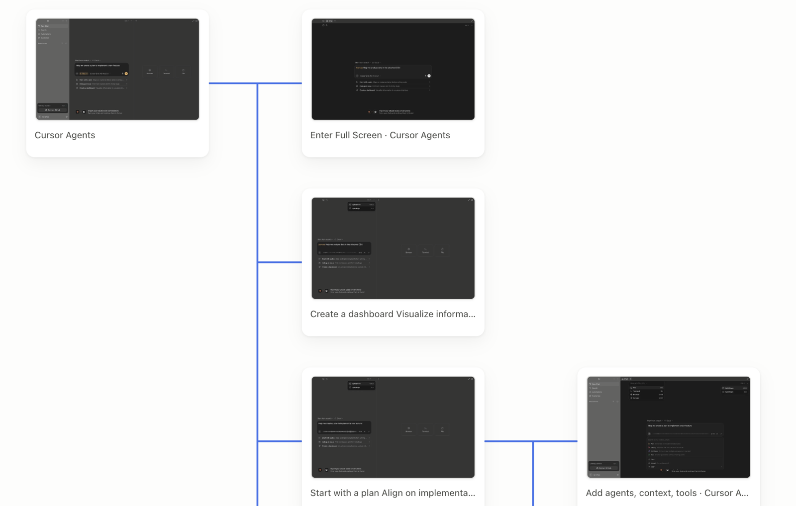

Web 项目
粘贴网址，或拖入项目文件夹让 Crank 启动它，然后扫描页面。
拖入项目、.app 或网址。Crank 扫描它能到达的页面，送进 Figma 或 Paper——是可编辑图层，不是截图。
下载 Crank粘贴网址，或拖入项目文件夹让 Crank 启动它，然后扫描页面。
拖入源码或构建好的 .app，直接读取应用实际渲染的界面。
给它一个 iOS 项目。Crank 会在模拟器中运行，并导出能够可靠到达的页面。
扫描在本机完成。源码不会上传；只有你主动同步时，才发送标准化的视觉结构。
屏幕之间的连线会标出触发跳转的操作。点击即可打开目标屏，并按原路径再次到达它。

图层能选、能改。再次扫描会更新原来的画框，不会重复创建一套。
屏幕直接画进当前打开的 Paper 文件，无需插件或配对；也可以复制后粘贴。
导出一个自带图片的 HTML 文件，任何浏览器都能离线打开，对方无需安装 Crank。